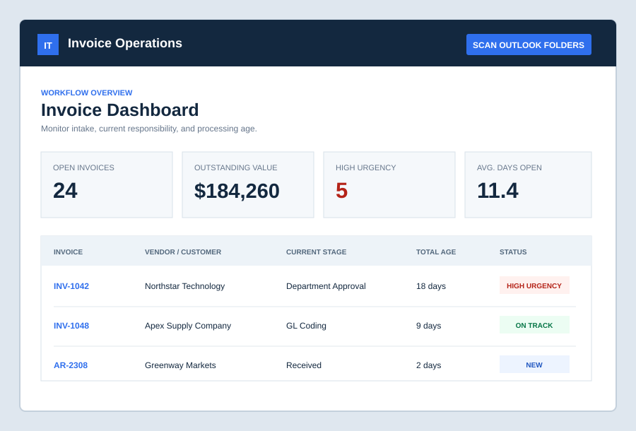

Find qualifying invoices
Scan designated Outlook folders and evaluate folder location, sender information, Email Subject Lines, and PDF attachments.
Identify invoices from designated Outlook folders, route them into the correct processing queue, and monitor how long each item remains at every approval stage.
This initial prototype uses fictitious information and does not connect to a real Outlook mailbox.

The service is designed for accounting teams that need a clearer way to monitor invoices before they are entered, approved, and paid.
Scan designated Outlook folders and evaluate folder location, sender information, Email Subject Lines, and PDF attachments.
Place customer invoices and vendor bills into separate queues using rules appropriate to each type of email.
Show total invoice age and the number of days spent with the current department or reviewer.
The first version demonstrates how two invoice sources will eventually be identified and organized without using confidential company data.
Outlook / Panhandle Pure / ACCTINV
Outlook / Panhandle Pure / Payables / Bills
Enter how many invoices your team handles each month.
Illustrative estimate only, assuming 4 minutes saved per invoice.